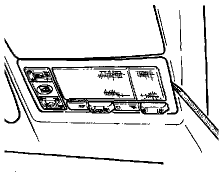

Dome Lamp: Service and Repair
Removing:

NOTE: The image shows the later style light and switch assembly, from 07.94. This procedure applies to all vehicles from m.y. 1993.
- Use screwdriver to carefully pry out front interior light assembly from headliner.
- Remove wire connectors and remove interior light.